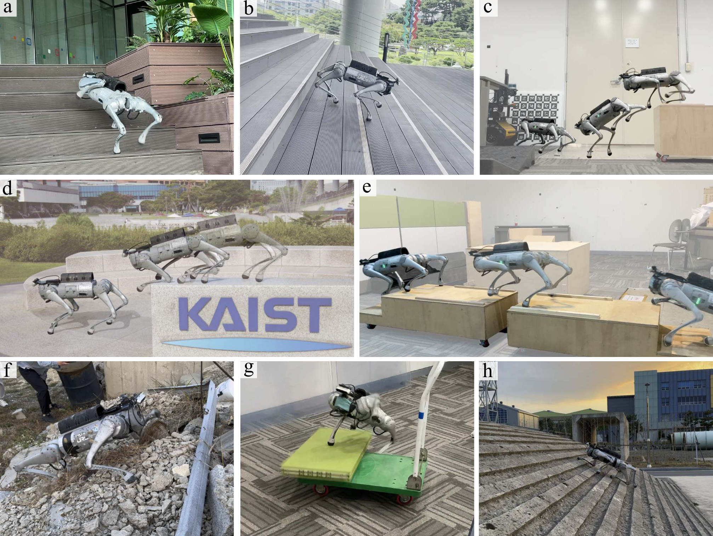
Agile locomotion: (a-b) ascending/descending stairs, (c) leaping, (d) probing, (e) gap crossing, (f) deformable terrain, (g) moving platforms, (h) 35° slopes.
Quadrupedal robots can navigate cluttered environments like their animal counterparts, but their floating-base configuration makes them vulnerable to real-world uncertainties. Controllers that rely only on proprioception (body sensing) must physically collide with obstacles to detect them. Those that add exteroception (vision) need precisely modeled terrain maps that are hard to maintain in the wild.
DreamWaQ++ bridges this gap by fusing both modalities through a resilient multi-modal reinforcement learning framework. The result: a single controller that handles rough terrains, steep slopes, and high-rise stairs—while gracefully recovering from sensor failures and situations it has never seen before.
DreamWaQ++ learns to walk by combining what the robot feels (joint positions, contact forces) with what it sees (3D point clouds), then fusing them through a lightweight mixer that runs in real time.
A depth camera captures 3D point clouds at 10 Hz, while proprioceptive sensors read joint states at 200 Hz. A hierarchical memory aligns these asynchronous streams.
A PointNet-based encoder with a learned confidence filter rejects noisy or unreliable points. A proprioceptive encoder captures body dynamics as a stochastic latent, enabling skill discovery.
An MLP-mixer fuses both modalities into a unified context. The policy network outputs joint targets at 50 Hz, converted to torques by a PD controller at 200 Hz.
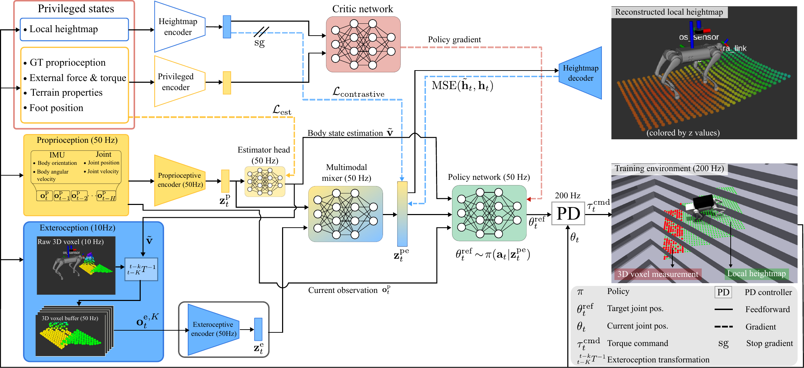
Architecture overview: proprioceptive and exteroceptive encoders are fused through a spatio-temporal multi-modal mixer, trained end-to-end with PPO.
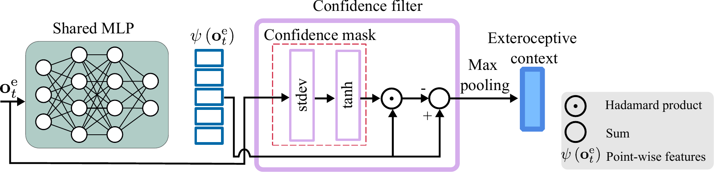
PointNet-based exteroceptive encoder with confidence filtering.
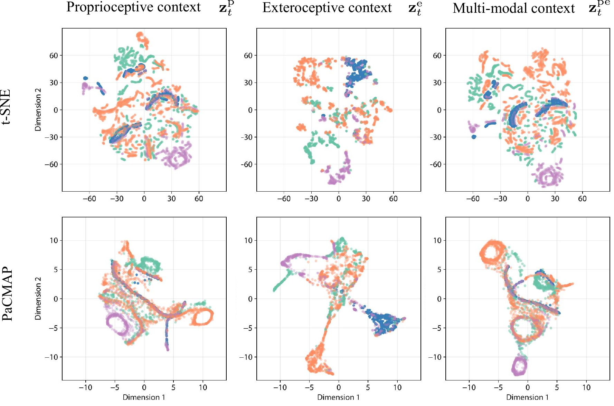
Learned latent representations naturally cluster by terrain type.
How fast can a quadruped climb 50 stairs? We raced DreamWaQ++ against the blind DreamWaQ baseline and Unitree's built-in controller. DreamWaQ++ finished the entire course in 35 seconds, covering 30 m horizontally and 7.4 m vertically. The blind controller managed only 20 m before losing pace, and the built-in controller failed at 6 m.
The key difference: DreamWaQ++ sees the stairs ahead and proactively raises its body and extends its foot swing, while the blind baseline drags its feet along stair edges.
Head-to-head race: simultaneous comparison.
Asynchronous race: detailed gait analysis.
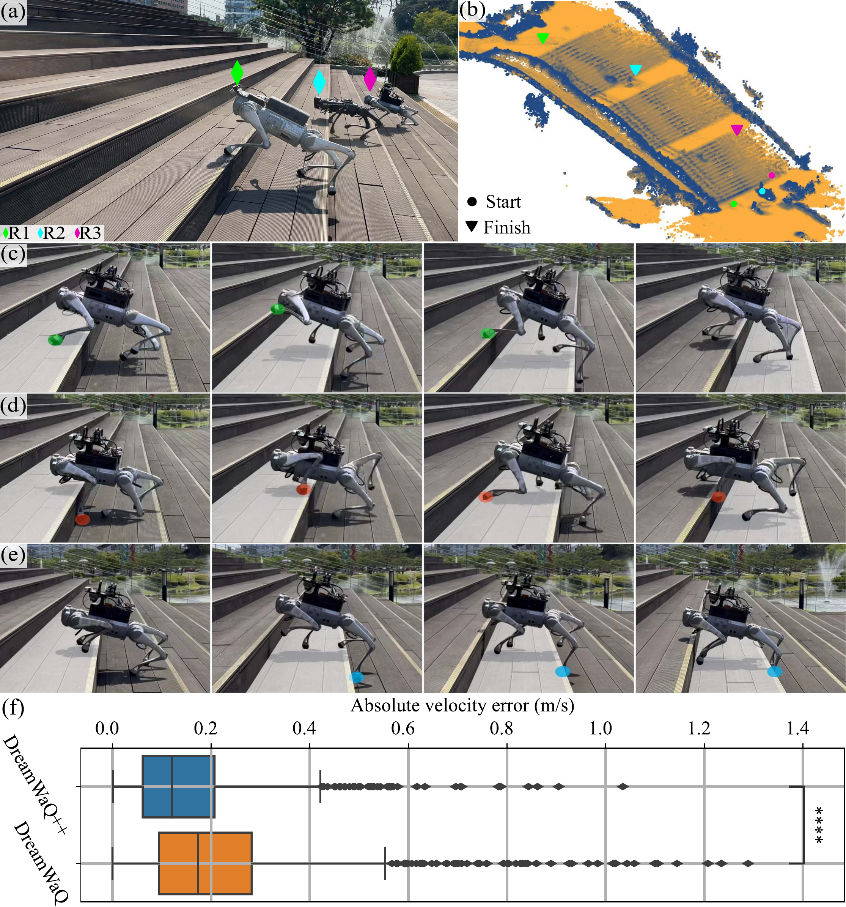
Race results and gait comparison. DreamWaQ++ proactively raises its body and extends foot swing, while the blind baseline drags feet along stair edges.
Blind controllers use a fixed gait regardless of what's ahead. DreamWaQ++ adapts its foot swing trajectory on the fly—extending the swing phase to clear combined rises up to 30 cm. It also retains a memory of the terrain structure beneath the robot, so it can handle asymmetric stair configurations where each step is different.
Obstacle negotiation across various stair configurations.
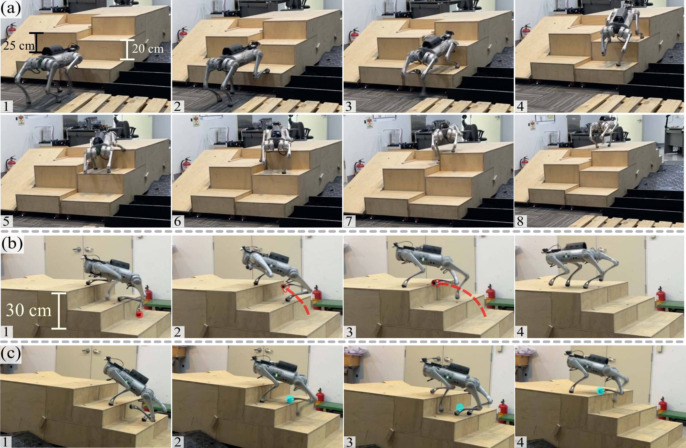
Affordance-aware locomotion on asymmetric stairs with foot swing adaptation.
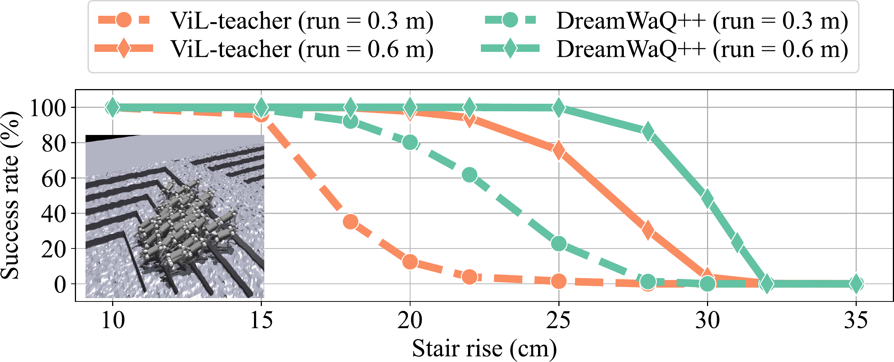
Success rates across different stair rise/run configurations.
Nobody told the robot to do this. When facing a terrain edge where the depth ahead is uncertain, DreamWaQ++ stops and probes the surface with its front legs before committing to a step. This cautious behavior emerged entirely from training—no explicit reward, no hand-crafted rule.
This is possible because the stochastic latent representation encourages the policy to explore diverse strategies during training. The robot effectively learns that "when in doubt, check first."
Probing behavior on uncertain terrain edges.
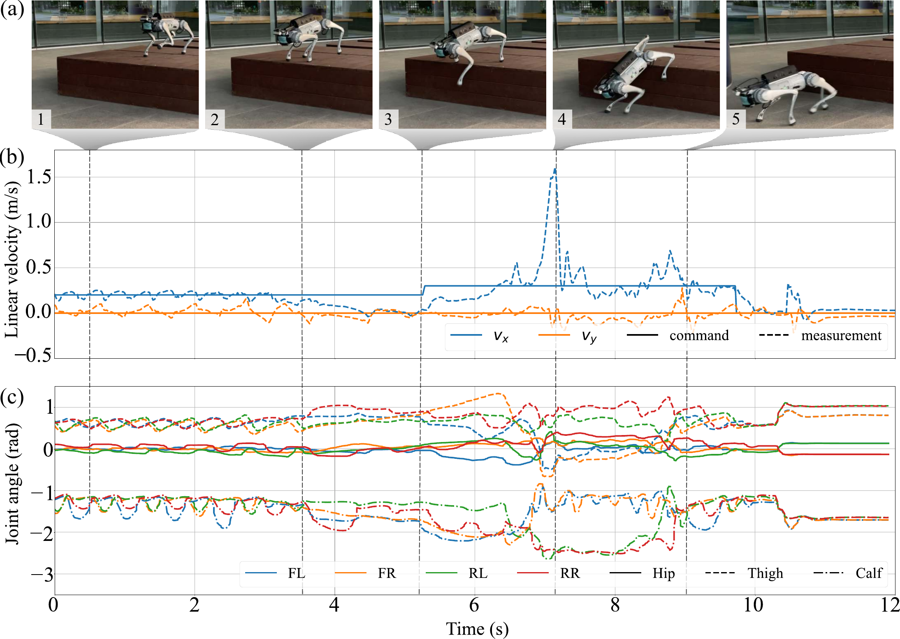
Velocity profiles and knee flexion angles during the probing sequence.
What happens when the ground disappears? We tested DreamWaQ++ by suddenly pulling a moving platform out from under it. The controller instantly enlarged its support polygon by 20% to land safely—a situation it had never encountered during training.
This resilience comes from the multi-modal fusion: when the visual input disagrees with what the body feels, the proprioceptive encoder takes over and provides a stable fallback. The latent context forms distinct clusters in real time, reflecting rapid adaptation.
Adaptation in out-of-distribution situations.
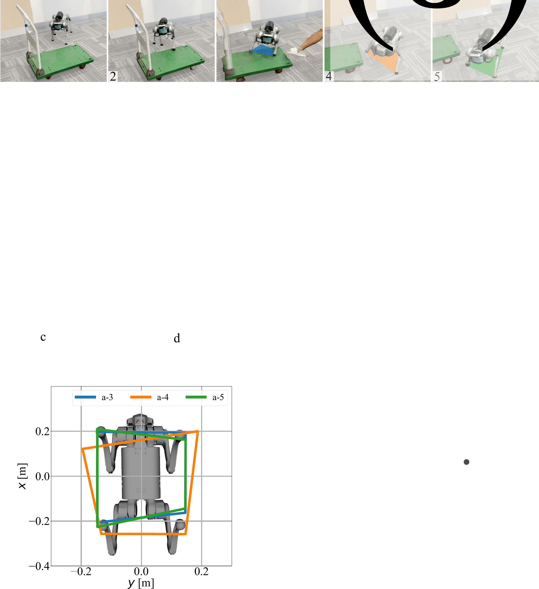
Support polygon expansion and real-time latent adaptation during sudden foothold changes.
DreamWaQ++ was trained on slopes up to 10°. We tested it on 35°—3.5× steeper than anything it had seen. The controller autonomously adopted a crawling gait with lowered body height, reducing rear leg torques by 1.5× compared to the blind baseline. No retraining needed.
Climbing a 35° slope with an emergent crawling gait.
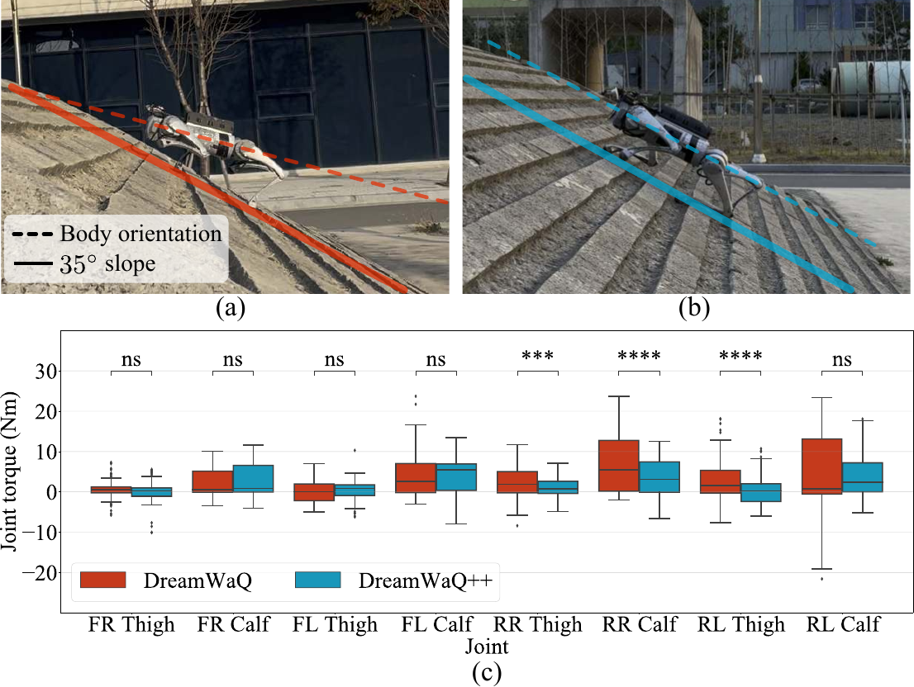
Torque comparison: DreamWaQ++ uses significantly lower rear leg torques through its adaptive crawling strategy.
DreamWaQ++ isn't tied to a single robot. We validated it across four hardware configurations with different sensor setups—from a RealSense camera to Ouster and Livox LiDARs, with up to 3 kg additional payload. The same framework transfers to different quadrupedal morphologies in simulation (Go1, ANYmal-C, Hound).
Cross-platform deployment demonstration.
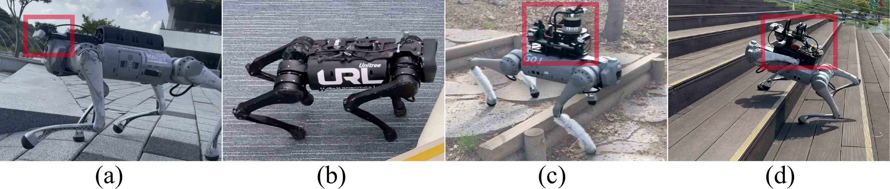
R1: Go1 + RealSense, R2: A1 (blind), R3: Go1 + Ouster LiDAR, R4: Go1 + Livox LiDARs.
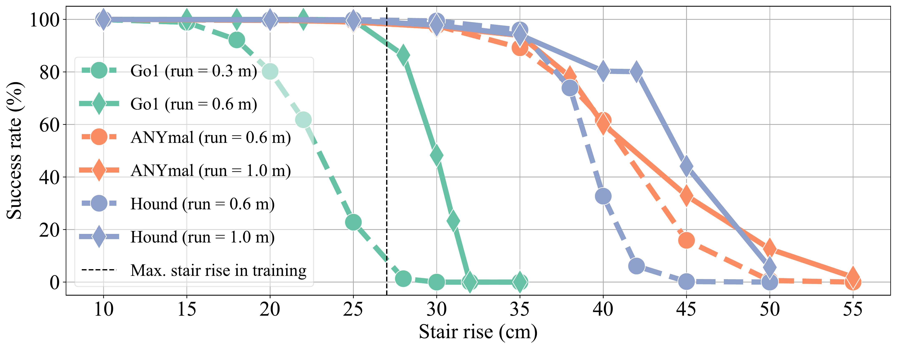
Success rates across different robot platforms.
Can a small robot climb something taller than its own legs? Yes. DreamWaQ++ develops parkour-like behaviors that vary by robot morphology. In the real world, a Go1 carrying a 2.5 kg payload successfully climbed a 41 cm soft sofa.
Overcoming large obstacles with emergent leaping and climbing.
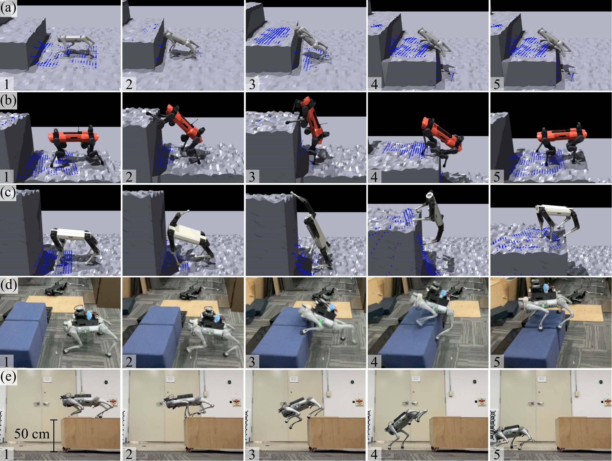
Go1 (0.6 m), ANYmal-C (1.0 m), Hound (1.5 m), and real-world deployment with payload.
What makes DreamWaQ++ work? We ablated every component to find out.
The proprioceptive encoder captures cyclic foot dynamics (ellipsoidal patterns), while the exteroceptive encoder separates terrain types into distinct clusters. When fused, the multi-modal context preserves both—and the proprioceptive signal persists even when exteroception is unreliable, acting as a safety net.
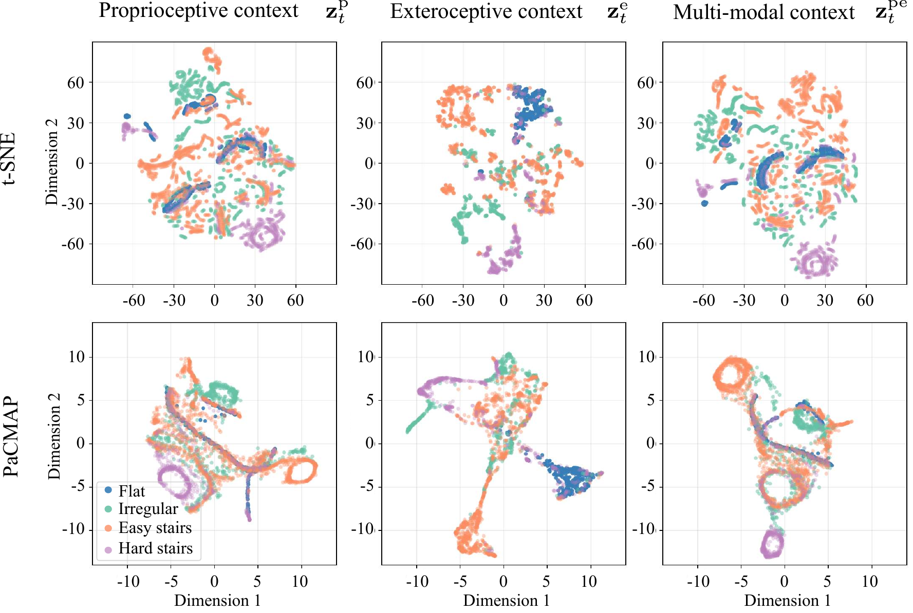
PacMAP visualization: proprioceptive, exteroceptive, and fused multi-modal embeddings across terrain types.
Removing the latent fusion mechanism causes the largest drop—from 97.8% to 60.7% on hard stairs. The contrastive loss aligns the two modalities, and the versatility gain encourages the diverse gaits (probing, crawling, leaping) that emerge during training.
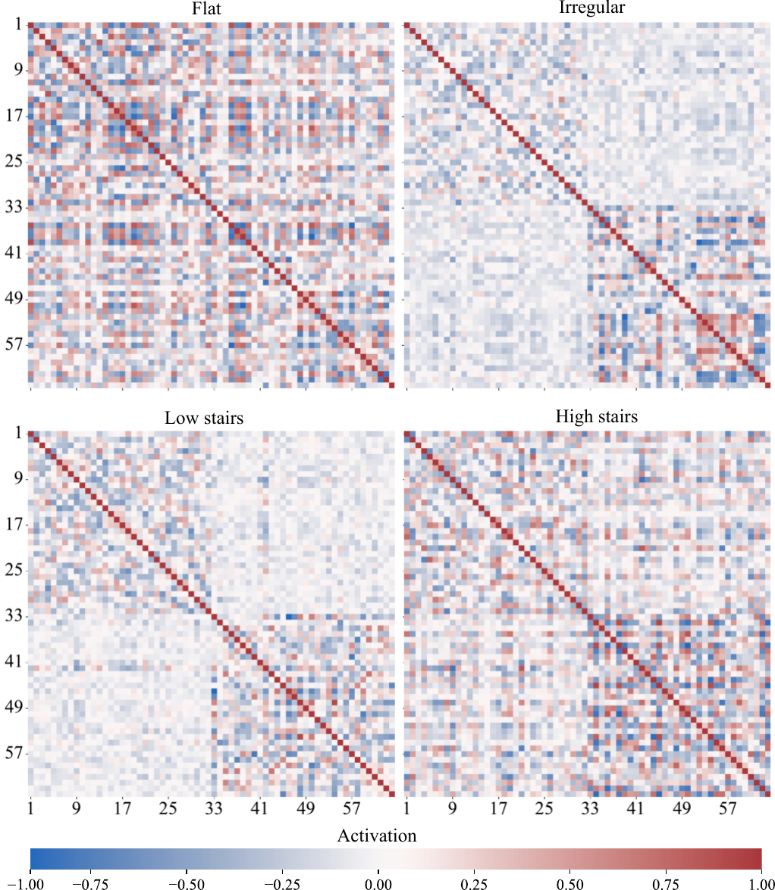
Cross-modal feature correlation across terrain types.
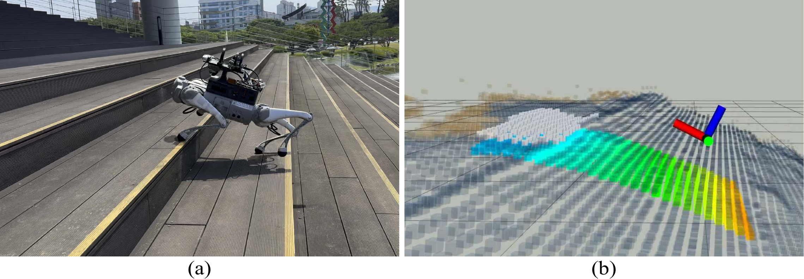
Terrain reconstruction from latent features vs. ground truth.
Yes. Scaling specific exteroceptive embedding dimensions directly modulates gait frequency and step height. Turning them up produces stair-climbing gaits; turning them down gives flat-ground walking. And when the camera fails entirely? The robot falls back to a foot-trapping reflex, using contact sensing alone to maintain a stable pose.
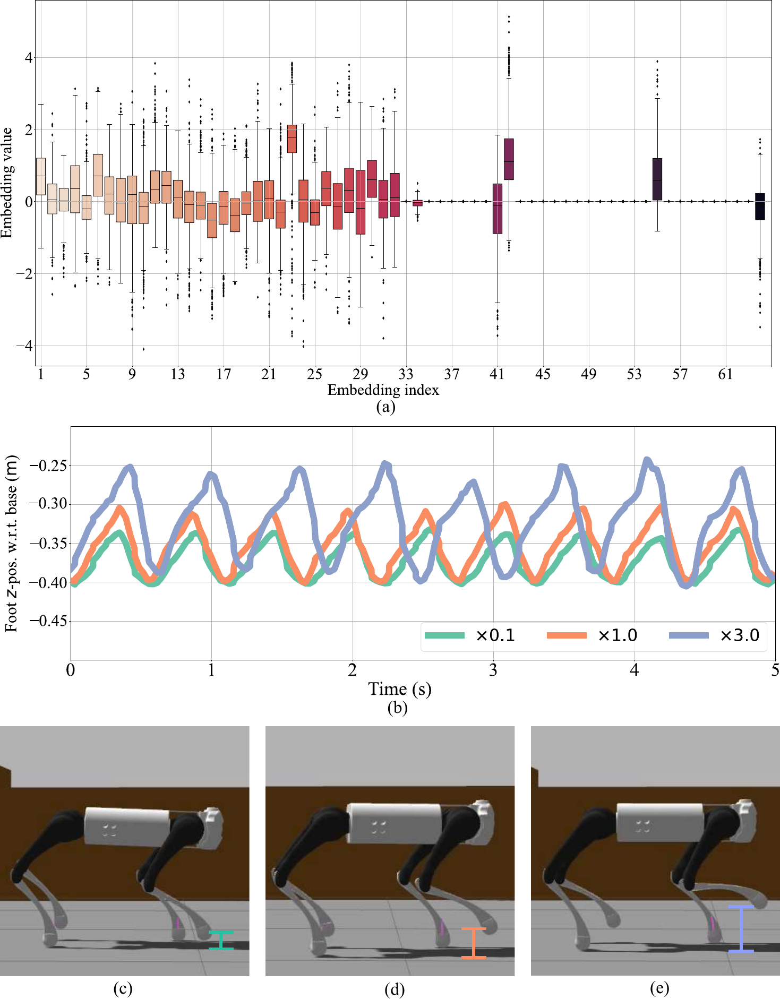
Scaling latent features directly modulates gait frequency and step height.
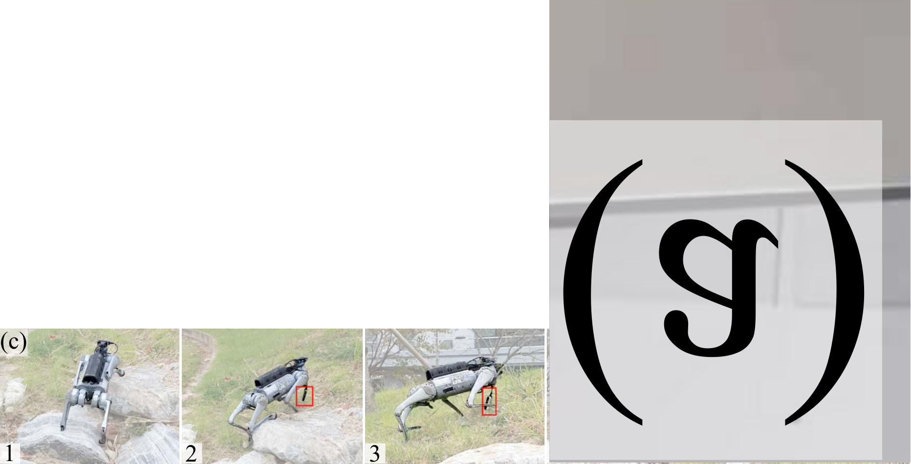
Resilience under sensor failures: foot-trapping reflex and stable recovery.
DreamWaQ (blind baseline) for comparison.
@article{nahrendra2024obstacle,
title={Obstacle-Aware Quadrupedal Locomotion With Resilient Multi-Modal Reinforcement Learning},
author={Nahrendra, I Made Aswin and Yu, Byeongho and Oh, Minho and Lee, Dongkyu
and Lee, Seunghyun and Lee, Hyeonwoo and Lim, Hyungtae and Myung, Hyun},
journal={IEEE Transactions on Robotics},
year={2026},
publisher={IEEE}
}